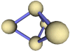

vrmlgraph |
||||||||||||||
|
 3-D VRML graph drawing package in Java |
||||||||||||||
| What is it? | ||||||||||||||
An object oriented Java
program available with source code for creating 3-D graph
representations, complete with example main methods and extensions for
performing the following:-
You should be able to get a quick idea of what this is capable of if you run the DemoMain Java classes included in the zip file. If you do not have one already, then I would strongly recommend that you install a VRML viewer to view the VRML files with. After all, there's little point in making 3-D graphs if you can't view them in 3-D ;-) You can get a free VRML viewer from http://www.cai.com/cosmo/
|
||||||||||||||
| Example graphs | ||||||||||||||
| Here are some example
graphs that have been generated using the vrmlgraph package:-
|
||||||||||||||
| How do I compile and run the demo programs? | ||||||||||||||
This is quite easy, I
kid you not. Simply unzip the whole lot. There shouldn't be any need to
compile it, as there are both .java and .class files in the zip file,
but if you do want to for whatever reason, then a simple javac
*.java should do the trick.
To actually give you some idea of what
this stuff does, I have made a few To run one of the demo programs with the All of the demo programs currently create a text file to describe the new 3-D spring embedded graph as well as a 3-D VRML scene of it. Some of the demo programs read their input from a file describing the starting nodes. Once you've got the hang of that, you should be able to take a look at the source of the DemoMain programs to work out what they are doing. You should then find it a piece of cake to write your own Java applications that make use of this package.
|
||||||||||||||
| Download | ||||||||||||||
| The latest information
about this 3-D spring embedder in Java should always be available from http://vrmlgraph.i-scream.org.uk
You may download the package and example files for you own use from the sourceforge page. The zip file contains full source code, all the compiled classes, javadoc information and a jar file of the package. Please feel free to contact me via email if you have any questions regarding the use of this package. If you would like to use this package in one of your own programs, then I would be delighted to hear from you. Above all, it would be nice to hear about any ideas for improvement or additional features, or simply what you think of it at the moment.
|
||||||||||||||
| Javadocs | ||||||||||||||
| The zip file contains
javadoc information for this package, which you may also view here. View javadocs.
|
||||||||||||||
|
|